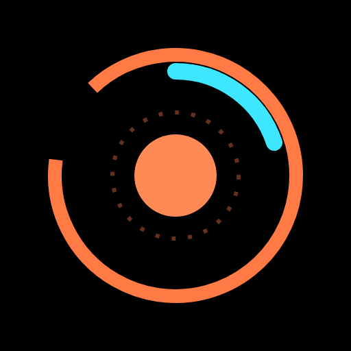

Jarvis
A private, self-hosted personal assistant.
Jarvis is a personal home assistant that runs on its owner's own computer. It helps one person with their day: reading and summarizing their email, managing their calendar and tasks, school schedules, reminders, music and smart-home devices. It is not a public service: it has a single user, its owner, and nobody else can sign in to it.
How it uses Google data
With the owner's permission, Jarvis connects to the owner's own Google account (Gmail, Google Calendar, Google Tasks, Google Classroom) to show and manage that information for the owner. Sensitive actions, such as sending an email or changing a calendar event, always require the owner's explicit approval first.
Contact
orikeshet100@gmail.com